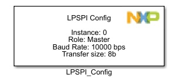
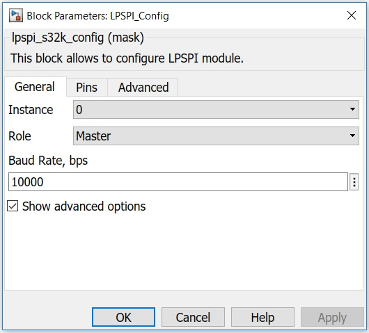
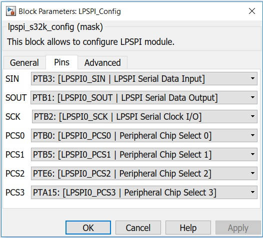

LPSPI Configuration Block
This block allows the user to configure the LPSPI module.
The LPSPI module can run as Master or Slave.
You can set advanced properties like CPHA, CPOL, bit order, frame size and others in the Advanced tab.
Block Image
Inputs:
- None
Outputs:
- None
Parameters and Dialog Box
The block dialog consists of the following tabs:
General
Instance
Select an instance of LPSPI to use.
Role
Here you select if it is running as Master or as Slave.
Baud Rate
Select the baud rate for LPSPI in bits per second.
Note: Only available for Master role.
Pins
Pins
Select the LPSPI pins to be used from the dropdown list.
Advanced

CPHA
Determines the timing of the data bits relative to the clock pulses
- For CPHA=0, the "out" side changes the data on the trailing edge of the preceding clock cycle, while the "in" side captures the data on (or shortly after) the leading edge of the clock cycle. The "out" side holds the data valid until the trailing edge of the current clock cycle. For the first cycle, the first bit must be on the MOSI line before the leading clock edge.
- For CPHA=1, the "out" side changes the data on the leading edge of the current clock cycle, while the "in" side captures the data on (or shortly after) the trailing edge of the clock cycle. The out side holds the data valid until the leading edge of the following clock cycle. For the last cycle, the slave holds the MISO line valid until slave select is deasserted.
CPOL
Determines the polarity of the clock.
- CPOL=0 is a clock which idles at 0, and each cycle consists of a pulse of 1. That is, the leading edge is a rising edge, and the trailing edge is a falling edge.
- CPOL=1 is a clock which idles at 1, and each cycle consists of a pulse of 0. That is, the leading edge is a falling edge, and the trailing edge is a rising edge.
Bit order
Select the order on which bits are transmitted on the line (Most Significant Bit first or Least Significant Bit first).
Frame size
Select the size of a frame, in bits.
Peripheral CS
Select which Chip Select (from the ones available) you want to use [PCS0,PCS1,etc].
Peripheral CS Polarity
Select if CS is active LOW or HIGH.
Block Dependency
- None
Block Miscellaneous Details
- None